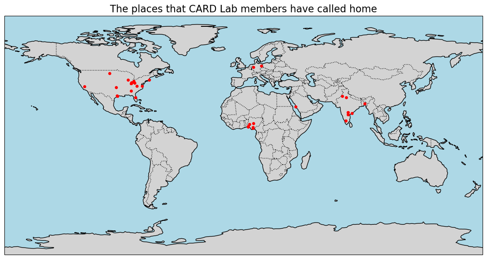

Years of activity
3.1
Students currently working toward degrees
14
Graduate degrees awarded
10
Undergraduates mentored in scientific research
11
06 Oct 2025
06 Oct 2025
::: {.style=“font-size: 0.75rem;”} Approximately 16% of the Materials Engineers in the United States workforce are women. Women earn around 33% of graduate degrees in Materials Engineering, yet constitute 50% of the population. More information can be found at Data USA. :::
